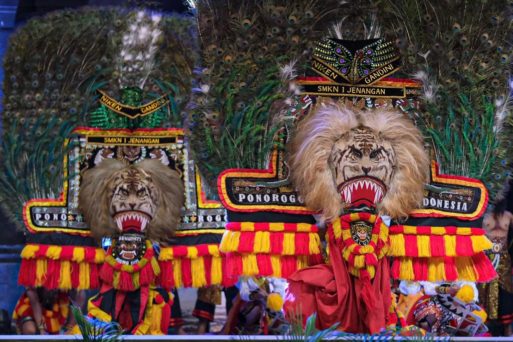
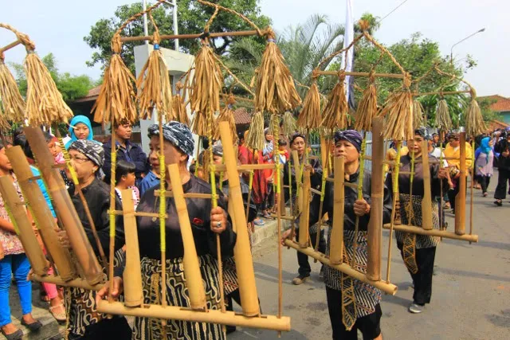
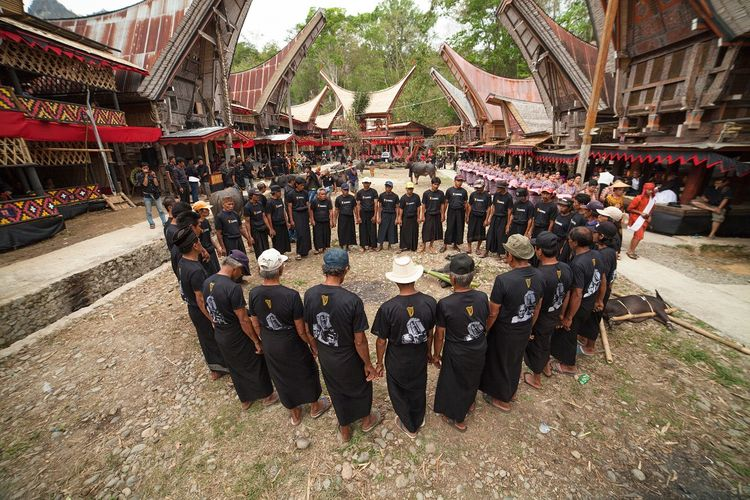

"Welcome To Indonesia!"
Is a warm invitation to experience the country's diverse cultures, natural beauty, and hospitality.
Kebudayaan Indonesia
Kebudayaan Indonesia kaya akan keanekaragaman budaya yang mencakup tradisi, seni, bahasa, dan adat istiadat dari berbagai suku dan daerah. Dari tarian tradisional yang indah seperti tari Bali dan tari Jawa, hingga seni ukir yang rumit dan tekstil tradisional yang cantik, kebudayaan Indonesia mencerminkan nilai-nilai seperti keramahan, keharmonisan dengan alam, dan keberagaman yang memperkaya identitas bangsa ini.
|  |  |
 |
Tari Reog Ponorogo |
Tari Kecak |
Kesenian Wayang |
 |
 |  |
Pesta Rakyat Pasola |
Upacara Seren |
Upacara Adat Toraja |
Pariwisata Indonesia
Pariwisata Indonesia menawarkan keindahan alam yang memukau, kekayaan budaya yang beragam, serta keramahan masyarakatnya. Dari pantai berpasir putih di Bali, kuil kuno di Yogyakarta, hingga keanekaragaman hayati di hutan hujan Kalimantan, setiap sudut Indonesia menawarkan pengalaman unik bagi pengunjung. Wisatawan dapat menikmati petualangan alam seperti snorkeling di Pulau Komodo, mendaki gunung berapi seperti Gunung Bromo, atau menikmati keindahan seni pertunjukan seperti tari Bali dan wayang kulit Jawa. Pariwisata Indonesia tidak hanya menjanjikan liburan yang tak terlupakan tetapi juga pengalaman budaya yang mendalam.
 |
 |
|
Labuan Bajo |
Banda Neira |
Kawah Ijen |
 |
 |
 |
Taman Bromo Tengger Semeru |
Raja Ampat |
Taman Nasional Komodo |